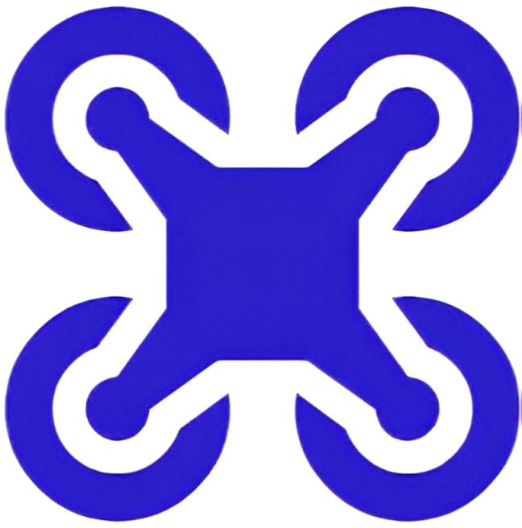
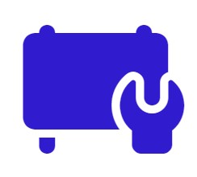

Обслуживание и транспортировка грузов:
Обработка опасных грузов с целью транспортировки воздушным транспортом.
Услуги дистанционно пилотируемых воздушных судов (БПЛА).

Обработка опасных грузов с целью транспортировки воздушным транспортом.
Услуги дистанционно пилотируемых воздушных судов (БПЛА).
.svg)
Проектирование в области строительства.
Строительно-монтажные работы, включающие: работы по устройству инженерных сетей и систем, систем электроснабжения, электроосвещения, электросвязи и телекоммуникаций.
.svg)
Эксплуатация аэродромов, вертодромов и их оборудования.
Эксплуатация станции дозаправки вертолётов.
.svg)
Обслуживание воздушного движения.
Аэронавигационное обслуживание.
Метеорологическое обеспечение полётов гражданской авиации.

Поставка и установка оборудования для аэродромов и вертодромов.
Услуги по установке и вводу в эксплуатацию технологического оборудования, связанного со связью и навигацией.
Эксплуатация, техническое обслуживание и ремонт авиационного радионавигационного и электросветотехнического оборудования.
Услуги по лесомонтажным, изолировочным и покрытиям (производственные изоляционные и малярные услуги).
Наша миссия — удовлетворять потребности и превосходить ожидания клиентов в сфере эксплуатации аэродромов и вертодромов, а также сервисных услуг в гражданской авиации. Мы стремимся к лидерству в этой области, опираясь на постоянное улучшение, техническое развитие и высокий уровень профессионализма. В основе нашей стратегии лежит освоение новых рынков, развитие услуг под запросы клиентов, повышение качества и поддержание благоприятного климата в коллективе для эффективного решения задач.